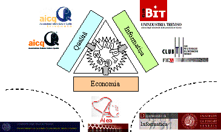
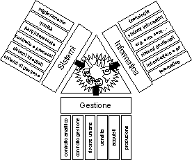
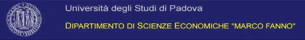
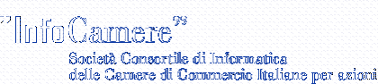
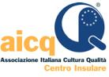
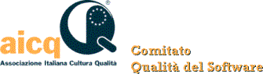
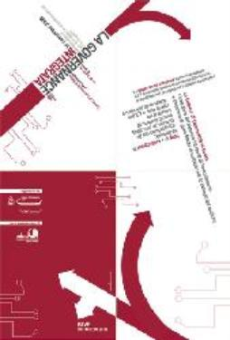
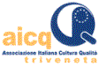
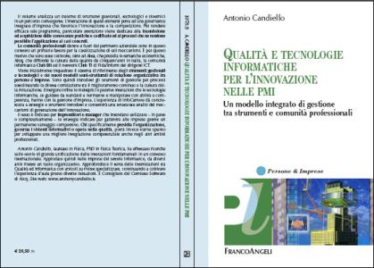
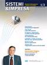

Un insieme di metodologie di derivazione
gestionale, tecnologica e sistemica vengono passate in rassegna in un progetto
di comunicazione allo scopo di evidenziare gli spazi di interazione positiva
per una governance integrata d’impresa.
Per rendere più approfondita l’analisi e più efficace la comunicazione, viene
dedicata una particolare attenzione ai meccanismi di trasmissione ed
acquisizione delle conoscenze pratiche e codificate ed ai processi che ne
rendono possibile l’applicazione ai casi concreti, coinvolgendo allo scopo le
comunità professionali, gli enti camerali e le
università.
Le comunità
professionali dentro e fuori dal perimetro aziendale sono un fattore
primario per la catalizzazione positiva degli scambi esperienziali. Sono
pertanto coinvolte in un tale percorso: Alea, che presidia le tematiche
economiche, Aicq, che diffonde la cultura della qualità da cinquant’anni in
Italia, la comunità informatica Club Bit ed il network Club TI di Fida/Inform
dei dirigenti ICT. Il network delle Camere
di Commercio e delle Aziende
Speciali si rivela d’altra parete un fattore cruciale per l’aggregazione
tra le imprese e per la transizione ad un rinnovato modello di interazione
tecnologicamente rafforzato con le PA locali e centrali. Le Università, portatrici e centri
diffusori della conoscenza sedimentata, possono invece facilitare quel salto a
lungo invocato dalle imprese verso una maggiore concretezza nei processi di
innovazione tecnologica e gestionale.
Gli eventi
organizzati e la documentazione
associata hanno l’obiettivo di promuovere una cultura gestionale d’impresa
moderna, conscia di tutti gli strumenti a disposizione e delle opportunità che
essi generano per avviare un percorso strutturato teso a conseguire l’innovazione di processo, organizzativa
e di prodotto. Verranno nel seguito illustrati maggiori dettagli del piano
nell’ambito di una modalità più adatta ad uno (a) scambio di conoscenza ed
esperienza tramite l’organizzazione e la partecipazione ad eventi, ed una (b) strutturazione della conoscenza tramite
opportune pubblicazioni.
Gli eventi pianificati prevedono l’individuazione di un referente territoriale che si occupi della gestione e della logistica dell’evento, che si avvarrà del contribuito di altre organizzazioni per i contenuti degli interventi e la pubblicizzazione presso i rispettivi ambiti di pertinenza.
Ogni evento avrà un moderatore, che condurrà l’incontro, un discussant, che lancerà temi e provocazioni, e diversi partecipanti, che porteranno ciascuno il proprio apporto sia in termini personali che i termini dell’organizzazione rappresentata. Andrà valutata l’opportunità di mantenere gli atti degli incontri a futura referenza o per una eventuale pubblicazione aggiuntiva. In aggiunta agli eventi organizzati con l’obiettivo dichiarato di affrontare tali tematiche, vi sarà la più semplice partecipazione ad eventi autonomamente gestiti dalle comunità professionali nei quali verrà mantenuto uno spazio apposito.
La progettazione degli
eventi è a cura di Antonio Candiello (www.anthonycandiello.it) ed Andrea Marella.
Sono in corso di programmazione i seguenti:
|
|
Data |
Località |
Ente |
|
1 |
Mercoledì 18 Ottobre 2006 |
Padova |
Dipartimento “M. Fanno”, Università di Padova |
|
2 |
Giovedì 16 Novembre 2006 |
Roma |
Enti Camerali, Aicq CI ed Aicq CS |
|
3 |
Mercoledì 20 Dicembre 2006 |
Mestre |
Dipartimento di Informatica, Università di Venezia |
|
4 |
Venerdì 19 Gennaio 2007 |
Vicenza |
Associazione Artigiani di Vicenza |
|
5 |
Giovedì 22 Marzo 2007 |
Treviso |
Club Bit / Unindustria Treviso e Enti Camerali |
|
6 |
(in via di definizione) |
Venezia |
Alea, Aicq Triveneta, Club Bit, Club TI, Aif |
|
Sigla |
Organizzazione |
Sito web |
|
InfoCamere |
s.c. di Informatica
delle Camere di Commercio |
|
|
CCIAA RM |
Camera di Commercio di
Roma |
|
|
CCIAA TV |
Camera di Commercio di
Treviso |
|
|
Unioncamere |
Unione Italiana delle
Camere di Commercio |
|
|
TrevisoTecnologia |
Azienda Speciale per l’Innovazione
Tecnologica |
|
|
Alea |
Associazione Laureati in
Economia Aziendale |
|
|
Aicq |
Associazione Italiana
per la Cultura della Qualità |
|
|
Aicq TV |
Aicq Triveneta |
|
|
Aicq CI |
Aicq Centro Insulare |
|
|
Aicq CS |
Aicq Comitato Software |
|
|
Club Bit |
Club dei Responsabili
dei Sistemi Informativi |
|
|
Club TI |
Club Triv. per le
Tecnologie dell’Informazione |
|
|
Aif |
Associazione Italiana
Formatori |
|
|
|
Università di Padova,
Dip. “Marco Fanno” |
|
|
|
Università di Venezia,
Dip. di Informatica |
|
|
|
Associazione Artigiani
di Vicenza |
|
|
|
Unindustria Treviso |
|
|
|
Unindustria Venezia |
Il ruolo delle
tecnologie ICT e della qualità per l’innovazione nella gestione aziendale
Logistica: Padova, Dipartimento di Scienze Economiche “M. Fanno”
Giorno ed orario: mercoledì 18 Ottobre 2006, ore 14 – 15:30
Riferimenti organizzativi: segreteria di Dipartimento

Gestore dell’iniziativa: Università di Padova (rif. dott. Andrea Marella)
Enti camerali: InfoCamere
Comunità professionali: Club TI, Aicq Comitato Software
Moderatore: prof. Andrea Marella (Università di Padova)
Discussant: dott. Antonio Candiello (autore)
Partecipanti: ing. Michele Amoruso (InfoCamere), prof.ssa Eleonora Di Maria (Università di Padova), pres. Luigino Polin (Club Bit), dott. Luca Marcolin (Alea).
· Introduzione (dott. Andrea Marella, Università di Padova)
· Brevi considerazioni (dott. Antonio Candiello, autore; ing. Michele Amoruso, InfoCamere);
· Testimonianze (Luigino Polin, Club Bit; Luca Marcolin, Alea);
· Domande e risposte con gli studenti;
· Conclusioni (prof.ssa Eleonora Di Maria, Università di Padova).
I sistemi di gestione, per la qualità o integrati, sono ormai ampiamente diffusi tra le imprese quale strumento per garantire con sempre maggiore efficacia la convergenza delle azioni aziendali nei confronti del raggiungimento di obiettivi economici e non La parallela diffusione delle tecnologie informatiche presso le imprese ha raggiunto un livello tale da costringere a sviluppare una gestione strutturata dei sistemi informativi per conseguirne i migliori risultati a parità di impegno economico e di risorse. La familiarità con l’informatica e con il linguaggio dei sistemi di gestione è ormai una richiesta standard da parte delle imprese nei confronti dei nuovi entranti nelle aziende, che hanno d’altra parte l’opportunità di combinare tali strumenti con gli strumenti gestionali economici di riferimento facendo emergere sinergie che sono più facilmente identificabili proprio dalle giovani generazioni.
Status organizzativo: completato.
Un'opportunità per le
pubbliche amministrazioni e le imprese.
Logistica: Roma, Via Dei Burrò, Sede Camera di Commercio, Sala del Consiglio
Giorno ed orario: giovedì 16 novembre 2006, ore 15:00 – 18:00
Riferimenti organizzativi: Camera di Commercio di Roma
Sito web: http://www.rm.camcom.it/Eventi.asp?cmd=view&ID=216



Gestore dell’iniziativa: Enti camerali (rif. ing. Michele Amoruso)
Enti Camerali: Camera di Commercio di Roma, InfoCamere
Comunità professionali: Aicq Centro Insulare ed Aicq Comitato Software
Moderatore: dott. Antonio Candiello (autore)
Discussant: ing. Michele Amoruso (InfoCamere), dott. Luca De Pietro (TeDIS)
Partecipanti: (in via di definizione per gli enti camerali), dott.ssa Carolina Matarazzi (pres. Aicq Centro Insulare), ing. Mario Cislaghi (pres. Comitato Software Aicq)
·

Saluto e apertura dei lavori (Fabrizio Autieri, Segretario Generale della Camera di Commercio di Roma)o Qualità per le Pubbliche Amministrazioni e per le imprese (Carolina Matarazzi, Presidente Aicq Centro-Insulare, Mario Cislaghi, Presidente Aicq Comitato Software)
o Qualità e tecnologie informatiche per l’innovazione nelle PMI (Antonio Candiello, Consigliere Aicq Comitato Software)
· Il cambiamento organizzativo, efficienza e qualità dei servizi: testimonianza della Camera di Commercio di Roma
o L’investimento sulle risorse umane (Stefania Cantalini, Dirigente dell’Area Affari Generali e del Personale)
o La reingegnerizzazione dei processi (Pierluigi Federici, Dirigente dell’Area Promozione e Sviluppo)
o L’investimento sulle tecnologie – Il workflow (Maria Verde, Dirigente dell’Area Sistemi Informativi)
· Tavola Rotonda
o partecipano: Michele Amoruso, Responsabile Organizzazione Sistemi e Procedure interne presso InfoCamere, Carolina Matarazzi, Presidente Aicq Centro-Insulare, Mario Cislaghi, Presidente Aicq Comitato Software e Luca De Pietro, Ricercatore del TeDis presso la Venice International University;
o modera: Massimo Balducci, professore di Teoria dell’Organizzazione presso l’Università di Firenze)
Innovazione è miglioramento dei processi, novità nella produzione, efficacia nell’organizzazione. Se il software e le tecnologie ICT sono evidenti strumenti per l’innovazione di prodotto, qualità e sistemi di gestione sono pregiati strumenti per l’innovazione di processo. D’altra parte dimostrano sempre maggiore utilità per l’innovazione organizzativa i meccanismi a rete, sia internamente alle imprese, come ad esempio dimostrato dall’esperienza di InfoCamere, sia all’esterno, grazie a realtà associative, come Aicq, ed istituzionali, come la galassia camerale. Le opportunità che iniziamo a sperimentare come utenti ed imprese nel miglioramento degli strumenti di relazione con la PA rappresentano solo l’inizio di un inarrestabile percorso complessivo di rinnovamento teso a facilitare i processi amministrativi e di interazione con gli Uffici centrali e locali ed a semplificare le modalità di relazione strutturata tra imprese.
Status organizzativo: completato.
Il ruolo delle
tecnologie ICT nell’innovazione d’Impresa
Logistica: Venezia – Mestre, presso il Dipartimento di Scienze Informatiche
Giorno ed orario: mercoledì 20 dicembre 2006, ore 9:30 – 11:00
Riferimenti organizzativi: (verificare dati segreteria di dipartimento)
Gestore dell’iniziativa: Università di Venezia, prof. Agostino Cortesi
Enti camerali: InfoCamere
Comunità professionali: Club TI, Club Bit, Aicq, Alea
Moderatore: prof. Agostino Cortesi (Università)
Discussant: dott. Antonio Candiello (autore)
Partecipanti: ing. Michele Amoruso (InfoCamere), ing. Tommaso Forin (Aicq), dott. Luca Marcolin (Alea), pres. Luigino Polin (Club Bit), ing. Roberto D’Orsi (Club TI)
· Introduzione (prof. Agostino Cortesi, Università);
· Testimonianze (ing. Michele Amoruso, InfoCamere, pres. Luigino Polin, Club Bit, ing. Tommaso Forin, Aicq, ing. Roberto D’Orsi, Club TI, dott. Luca Marcolin, Alea);
· Domande e risposte con gli studenti;
· Conclusioni (dott. Antonio Candiello, autore).
Al tumultuoso sviluppo delle tecnologie informatiche non sempre è corrisposta, nel nostro paese, una corrispondente valorizzazione degli aspetti competenziali per costruire strumenti ICT originali aderenti alle esigenze delle imprese italiane. L’ingegneria del software è scienza ad alto contenuto di conoscenza ed è strumento indispensabile per dare attuazione ai progetti di innovazione in quasi ogni ambito di sviluppo. Le tecniche derivanti dalla qualità, applicate allo sviluppo di software, consentono di aumentare l’affidabilità del prodotto risultante e di trasformare un processo creativo metodologicamente molto affine alla produzione artigianale in un più maturo processo ingegneristico/industriale. Diverse esperienze nel confine tra informatica e qualità sperimentate nelle imprese verranno portate a testimonianza, con il significativo apporto delle principali associazioni professionali nordestine.
Status organizzativo: confermato.
Quali strategie per
una gestione snella ed innovativa adatta alle PMI
Logistica: Vicenza, presso la locale Associazione Artigiani
Giorno ed orario: venerdì 19 gennaio 2006 ore 17:00
Riferimenti organizzativi: c/o Associazione Artigiani
Gestore dell’iniziativa: Associazione Artigiani (segue prof. Andrea Marella)
Enti Camerali: in via di definizione
Comunità professionali: in via di definizione
Responsabile coordinamento ed organizzazione evento: prof. Andrea Marella
Moderatore: prof. Andrea Marella (Università)
Discussant: dott. Antonio Candiello (autore)
Partecipanti: (Associazione Artigiani)
I sistemi di gestione, della qualità o integrati, trovano una specifica valorizzazione nell’ambito delle piccole e medie imprese, da sempre sensibili al miglioramento incrementale delle proprie produzioni allo scopo di acquisire continuamente competitività, in un processo recentemente rafforzato dall’esigenza di attestare con certificazioni esterne la qualità delle produzioni, dei processi e dei vincoli sociali ed ambientali. La recente diffusione delle tecnologie ICT fino alle realtà dimensionalmente più ridotte ne ha dimostrato la capacità di abbattere le barriere aprendo nuove opportunità di accesso ai mercati internazionali nonché i vantaggi nella gestione interna dei processi aziendali. Nasce a questo punto, in particolare per le PMI, l’esigenza di dare sintesi positiva e concreta ad un insieme di strumenti tecnologici, sistemici e gestionali altrimenti disordinatamente sovrapposti. Realtà accademiche e collegamenti con le organizzazioni professionali potranno essere da guida e supporto in un tale percorso da parte delle imprese.
Status organizzativo: confermato
l’interesse dell’Associazione Artigiani per l’iniziativa, è stata fissata la
data dell’evento. Va verificata l’eventuale partecipazione di altre entità
all’iniziativa.
Tecnologie ICT e
qualità strumenti per la competitività delle PMI
Logistica: Treviso, Palazzo Giacomelli presso Club Bit / Unindustria Treviso
Giorno ed orario: giovedì 22 Marzo 2007 ore 16:00 – 18:00
Riferimenti organizzativi: c/o Unindustria Treviso
Gestore dell’iniziativa: Club Bit (segue il pres. Luigino Polin; in coordinamento con Treviso Tecnologia ed Unindustria Treviso)
Enti Camerali: InfoCamere, Treviso Tecnologia, Camera di Commercio di Treviso
Comunità professionali: Club Bit, Alea
Moderatore: ing. Roberto Santolamazza (Treviso Tecnologia)
Discussant: dott. Antonio Candiello (autore) e dott. Marco Bettiol (ricercatore)
Partecipanti: pres. Luigino Polin (Club Bit), ing. Michele Amoruso (InfoCamere), dott.. Andrea Marella (Università), dott.. Luca Marcolin (Alea), diverse testimonianze aziendali
· Introduzione (Club Bit);
· Scenario ed inquadramento (dott. Antonio Candiello, autore, dott. Marco Bettiol, ricercatore);
· Tavola rotonda (moderatore ing. Roberto Santolamazza, Treviso Tecnologia), testimonianze aziendali;
· Conclusioni (pres. Luigino Polin, Club Bit).
I sistemi di gestione, della qualità o integrati, trovano una specifica valorizzazione nell’ambito delle piccole e medie imprese, da sempre sensibili al miglioramento incrementale delle proprie produzioni allo scopo di acquisire continuamente competitività. L’evoluzione delle tecnologie ICT ha posto di recente le condizioni per una penetrazione capillare anche nelle realtà di dimensione più ridotta. La complessità degli strumenti disponibili e la difficoltà che si pone quotidianamente ai responsabili aziendali nelle scelte correlate suggerisce alle piccole e medie imprese trivenete di potenziare la relazione con le realtà istituzionali (enti camerali e confindustriali) e le associazioni professionali (Aicq, il Club Bit ed altre realtà similari) in modo da gestire attraverso una rete di relazioni professionali tale complessità.
Status organizzativo: disponibilità
confermata da Treviso Tecnologia e da Club Bit. Deve solo essere definito con
precisione il programma e vanno precisate le testimonianze.
Qualità e Normative,
Tecnologie Informatiche, Gestione d’Impresa: diverse competenze e diverse
prospettive si incrociano per il comune obiettivo di una maggiore competitività
delle imprese.
Logistica: Venezia – Mestre, in via di definizione
Giorno ed orario: ore 16:30 – 18:30, mese di Gennaio o Febbraio 2007
Riferimenti
organizzativi: Alea (Unindustria Venezia?)

Gestore dell’iniziativa: Alea, dott. Luca Marcolin
Enti camerali: InfoCamere, altri da definirsi
Comunità professionali: Alea, Aicq, Club Bit, Club TI, Aif
Moderatore: dott. Luca Marcolin (Alea)
Discussant: dott. Antonio Candiello (autore)
Partecipanti: ing. Michele Amoruso (InfoCamere), ing. Tommaso Forin (Aicq), ing. Roberto D’Orsi (Club TI), pres. Luigino Polin (Club Bit), dott. Alessandro Cafiero (Aif Veneto).
· Introduzione (dott. Ferdinando Azzariti, Alea);
· Scenario ed inquadramento (Antonio Candiello, autore);
· Tavola rotonda (moderatore dott. Luca Marcolin, Alea);
· Conclusioni (ing. Tommaso Forin, Aicq).
Le comunità di pratica internamente ed esternamente ai confini aziendali sono il vero catalizzatore della crescita formativa delle persone che nelle imprese operano. Le varianti esterne alle imprese, le comunità professionali, sono in grado di rendere persistenti gli oggetti di conoscenza che nel tempo si vengono a creare grazie all’apporto volontaristico e comune degli associati. Questo fenomeno assume particolare rilevanza in alcuni ambiti: gestione aziendale, qualità, informatica, formazione, sono discipline che richiedono un continuo aggiornamento ed un sistematico interscambio esperienziale al fine di garantire l’adeguatezza dei sistemi concettuali e delle soluzioni tecniche applicate. Veri “motori di supporto” ai processi di innovazione, le comunità professionali sostengono di fatto con le reti interpersonali il funzionamento delle pmi, che trovano in esse la risposta corretta ai meccanismi di formazione strutturata programmata caratteristici delle grandi imprese. L’esperienza di Alea, di Aicq, dei Club informatici e di Aif fornisce concreta rappresentazione di questo processo e della sua particolare utilità nel triveneto.
Status organizzativo: è da
tempo confermata la disponibilità di Alea all’organizzazione di un evento su
questa tematica. Eventi già programmati inducono Alea a pianificare per il
prossimo anno (gennaio o febbraio) un’occasione di incontro, ma si pone
l’opportunità di gestire l’evento in coordinamento con le altre realtà associative
professionali (Aicq, i Club informatici, Aif).
Libri. Funzionali agli eventi sono alcune
pubblicazioni. In particolare il testo di nuova uscita:
Candiello A. (2006), “Qualità
e tecnologie informatiche per l’innovazione nelle PMI. Un modello integrato di gestione tra
strumenti e comunità professionali”, Franco Angeli, Milano.

Articoli. Diversi
articoli sulle principali riviste nazionali di settore hanno già approfondito
la tematica. Ad essi seguiranno altri interventi.

Atti. A seguire gli
incontri verrà valutata l’opportunità di consolidarne gli atti in forma
scritta.